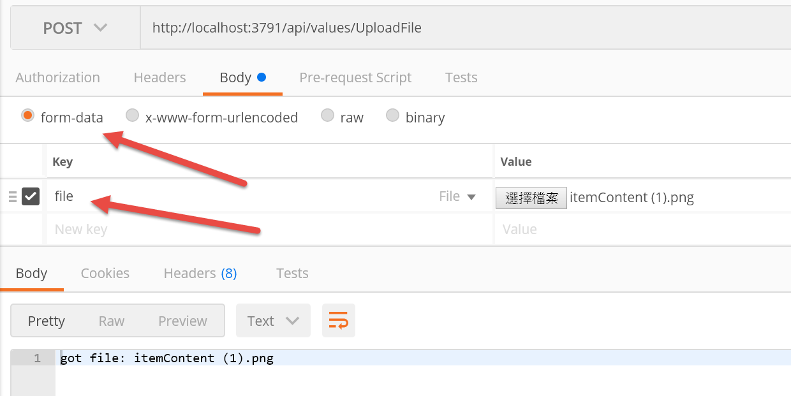
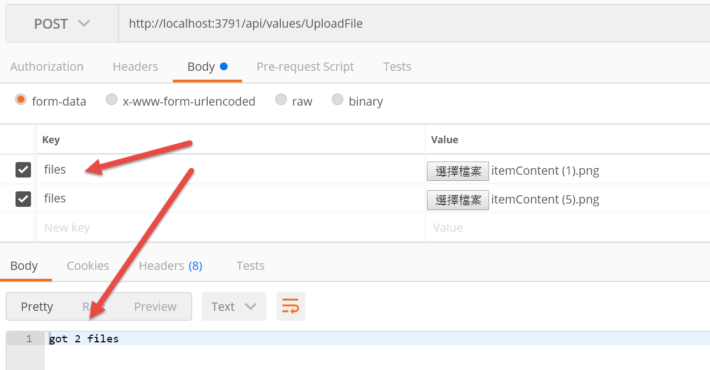
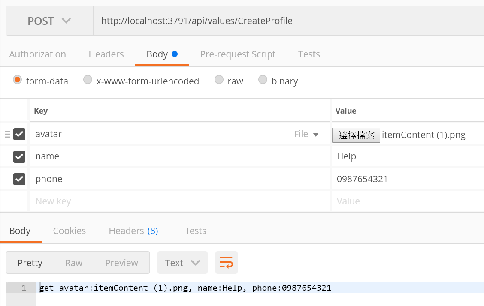
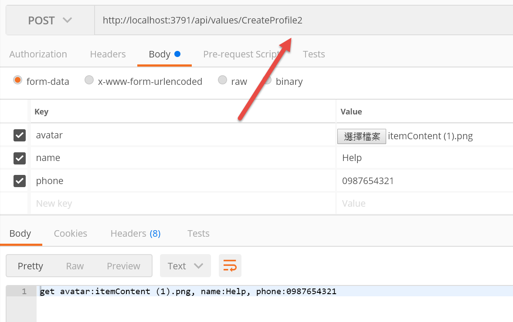

Asp.Net Core 上傳檔案
在 Asp.Net Core 要上傳檔案，非常容易
直接建立一個新的 Asp.Net Core Web Api 專ˋ案
在 ValuesController 裡輸入下面程式碼
1
2
3
4
| [HttpPost("UploadFile")]
public string UploadFile([FromForm]IFormFile file) {
return $"got file: {file.FileName}";
}
|
建置專案後，我們在 Postman 使用 form-data 傳送檔案

這邊注意兩個地方，傳輸協定選擇 form-data，並且 Key 要和方法的參數名稱一樣
這也意味著如果要傳兩個檔案時，可以下兩個參數
1
2
3
4
| [HttpPost("UploadFile")]
public string UploadFile([FromForm]IFormFile file, [FromForm]IFormFile file2) {
return $"got file: {file.FileName} and file2: {file2.FileName}";
}
|
不過如果遇到要上傳不定數量的檔案呢?
這時可以使用 ICollection，如下
1
2
3
4
| [HttpPost("UploadFile")]
public string UploadFile([FromForm]ICollection<IFormFile> files) {
return $"got {files.Count} files";
}
|
使用 Postman 的時候 Key 必須都使用同樣的名稱

接著讓我們設想一個狀況，
Client 要傳送使用者的檔案，包含一張照片和姓名、電話
此時可以有幾種作法，第一種是直接加在參數裡
1
2
3
4
| [HttpPost("CreateProfile")]
public string CreateProfile([FromForm]IFormFile avatar, string name, string phone) {
return $"get avatar:{avatar.FileName}, name:{name}, phone:{phone}";
}
|

另一個方法是建立一個接收用的物件
1
2
3
4
5
6
7
8
9
10
| public class ProfileData {
public string Name { get; set; }
public string Phone { get; set; }
public IFormFile Avatar { get; set; }
}
[HttpPost("CreateProfile2")]
public string CreateProfile([FromForm]ProfileData profile) {
return $"get avatar:{profile.Avatar.FileName}, name:{profile.Name}, phone:{profile.Phone}";
}
|
此時傳送一樣的資料也會對應到
